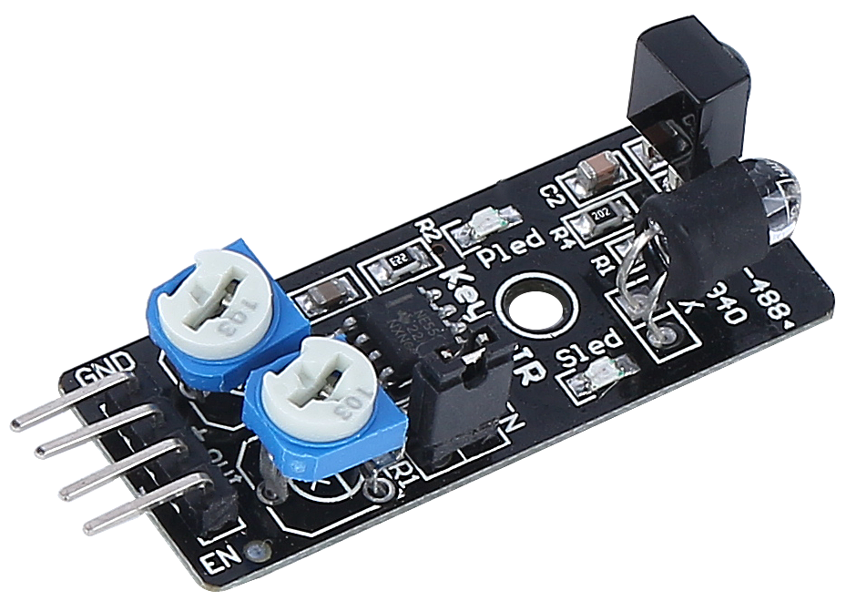

IR Obstacle Avoidcance Module¶
GND：Ground Input
+：3.3 to 5V DC Supply Input
Out：Signal output pin, default is high and output low when obstacle is detected
EN：Module enable pin. When it is low, the module is working and connected to GND by jumper cap by default.
This is a common IR obstacle avoidance module that uses a pair of IR transmitting and receiving components. Basically, the transmitter emits infrared light, and when the detection direction encounters an obstacle, the infrared light is back and received by the receiver tube. At this time, the indicator lights up. After circuit processing, it outputs a low level signal.
Sensing distance 2-40cm, with excellent anti-interference ability. There are different reflectivity levels in different colors of objects, so the darker the object, the closer to black the detection distance is short. The 2-30cm range of this sensor is detected against a white wall.
When the enable pin is at a low level, the module works. As soon as the jumper cap is plugged in, the EN pin is connected to GND, and the module is always working. If you want to control the EN pin by code, you need to remove the jumper cap.

Adjust the detection distance
Due to the different light environment, the factory-set detection distance may not be applicable, so you need to adjust its actual detection distance before use.
There are two potentiometers on the module, one for adjusting the transmitting power and one for adjusting the transmitting frequency, and by adjusting these two potentiometers you can adjust its effective distance.
You can place a white obstacle in front of the module at the distance you want, adjust a potentiometer on the module until the indicator light on the module just lights up, and then repeatedly move the obstacle to see if the indicator light on the module lights up at the distance you need.
If in the position you need, the indicator does not light up or is a long light does not go out, you can then go to adjust another potentiometer.

Features
operating voltage: 3.3 V to 5 V
output: digital (on/off)
detection threshold: adjustable by 2 potentiometers
distance range: 2 to 40 cm
adjustment R5: frequency adjustment 38 kHz (already optimized)
adjustment R6: IR LED duty cycle adjustment (already optimized)
operating temperature: -10 °C to +50 °C
effective angle: 35°
I/O interface: 4 wire interface (- / + / S / EN)
dimensions: 45 x 16 x 10 mm
weight: 9 g